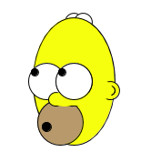

Processing
1. Introducció
Creat per Isaac Muro

Obtenir processing
- Descarregar Processing
- Botons (reproduir, parar, nou, obrir, guarda, exporta)
- Menú
- Diversos modes - Java, Javascript
1. Reviseu els exemples
Obriu el Processing, File -> Examples. Allà trobareu molts exemples on podeu veure el codi font i el resultat d'executar el codi.
2. Primer programa
void setup(){
size(200, 100);
}
void draw(){
background(0);
println("Hola Mon");
}
OpenProcessing
- Visita OpenProcessing
- Creat un usuari. NO posis el nom complet
- Investiga i executa els sketchs recomenats
- Revisem els sketchs dels vostres companys [1] [2] [3]
Eix Y Invertit
- L'eix X d'esquerra a dreta...
- L'eix Y de dalt cap abaix...
size
La funció size determina l'amplada i l'altura de l'sketch
size(200, 100);
// 200 és l'amplada de l'sketch en pixels
// 100 és l'altura de l'sketch en pixels

background 1
La funció background determina el color o la imatge de fons de l'sketch. Els colors estàn en format RGB.
background(145, 13, 86);
// 145 és la quantitat de vermell (Red)
// 13 és la quantitat de verd (Green)
// 86 és la quantitat de blau (Blue)
background 2
Figures
- Rect
- Stroke/noStroke
- Fill/noFill
- Point
- Line
- Ellipse
rect
La funció rect dibuixa un rectangle a la pantalla.
rect(30, 20, 55, 55);
// 30 és la posició X on comença a dibuixar-se el rectangle.
// 20 és la posició Y on comença a dibuixar-se el rectangle.
// 55 és l'ampla del rectangle.
// 55 és l'altura del rectangle.

stroke
La funció stroke determina el color del contorn de les figures que es dibuixen a continuació. Els colors estàn en format RGB.
stroke(204, 102, 0);
// 204 és la quantitat de vermell (Red)
// 102 és la quantitat de verd (Green)
// 0 és la quantitat de blau (Blue)

nostroke
La funció noStroke deshabilita el color del contorn de les figures.
noStroke();

fill
La funció fill determina el color del de l'interior de les figures que es dibuixen a continuació sense pintar el contorn. Els colors estàn en format RGB.
fill(204, 102, 0);
// 204 és la quantitat de vermell (Red)
// 102 és la quantitat de verd (Green)
// 0 és la quantitat de blau (Blue)

nofill
La funció noFill deshabilita el color de l'interior de les figures.
noFill();

REPTE: Cara somrient
Intenteu reproduir la cara que teniu a continuació amb codi Processing. Només amb les instruccions que hem explicat, hi hauria suficient.

point
La funció point dibuixa un punt en les coordenades que li indiquis.
point(30, 20);
point(85, 20);
point(85, 75);
point(30, 75);
// Els dos paràmetres són la coordenada X i Y del punt.

line
La funció line dibuixa una línia entre els dos punts indicats per les coordenades.
line(30, 20, 85, 75);
// 30 és la coordenada X del primer punt
// 20 és la coordenada Y del primer punt
// 85 és la coordenada X del segon punt
// 75 és la coordenada Y del segon punt
// La línia es dibuixa entre el primer i el segon punt
triangle
La funció triangle dibuixa un triangle utilitzant els 3 punts que se li passan com a paràmetres (6 nombres).
triangle(30, 75, 58, 20, 86, 75);
// 30 és la coordenada X del primer punt
// 75 és la coordenada Y del primer punt
// 58 és la coordenada X del segon punt
// 20 és la coordenada Y del segon punt
// 86 és la coordenada X del tercer punt
// 75 és la coordenada Y del tercer punt

ellipse
La funció ellipse dibuixa una elipse utilitzant un punt com a centre, i dos valors com a radi en X i radi en Y.
ellipse(56, 46, 55, 55);
// 56 és la coordenada X del radi
// 46 és la coordenada Y del radi
// 55 és l'amplada del radi en X.
// 55 és l'altura del radi en Y.

arc
La funció arc dibuixa un arc, que es pot entendre com una secció d'una elipse.
arc(50, 55, 50, 50, 0, HALF_PI);
// 50 és la coordenada X del radi
// 55 és la coordenada Y del radi
// 50 és l'amplada del radi en X.
// 50 és l'altura del radi en Y.
// 0 és on comença l'arc en graus.
// HALF_PI és on acaba l'arc en graus.
noFill();
arc(50, 55, 60, 60, HALF_PI, PI);
arc(50, 55, 70, 70, PI, PI+QUARTER_PI);
arc(50, 55, 80, 80, PI+QUARTER_PI, TWO_PI);

strokeweight
La funció strokeWeight canvia l'amplada del contorn de les figures.
strokeWeight(1); // Default
line(20, 20, 80, 20);
strokeWeight(4); // Thicker
line(20, 40, 80, 40);
strokeWeight(10); // Beastly
line(20, 70, 80, 70);

arc
La funció arc dibuixa un arc, que es pot entendre com una secció d'una elipse.
arc(50, 55, 50, 50, 0, HALF_PI);
// 50 és la coordenada X del radi
// 55 és la coordenada Y del radi
// 50 és l'amplada del radi en X.
// 50 és l'altura del radi en Y.
// 0 és on comença l'arc en graus.
// HALF_PI és on acaba l'arc en graus.
noFill();
arc(50, 55, 60, 60, HALF_PI, PI);
arc(50, 55, 70, 70, PI, PI+QUARTER_PI);
arc(50, 55, 80, 80, PI+QUARTER_PI, TWO_PI);
deures
Crear un personatge expresant un sentiment. Podeu dibuixar-vos a vosaltres.
Exemples...
